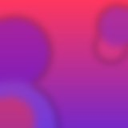
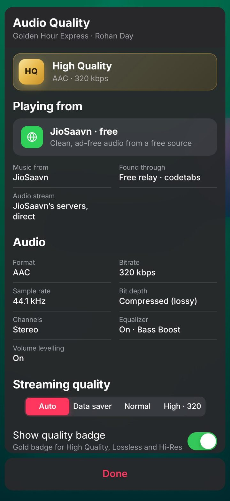
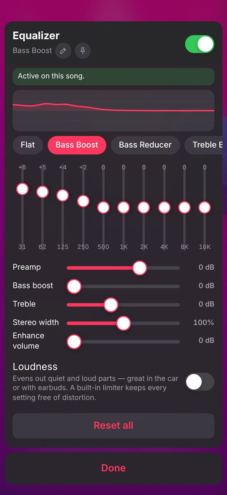
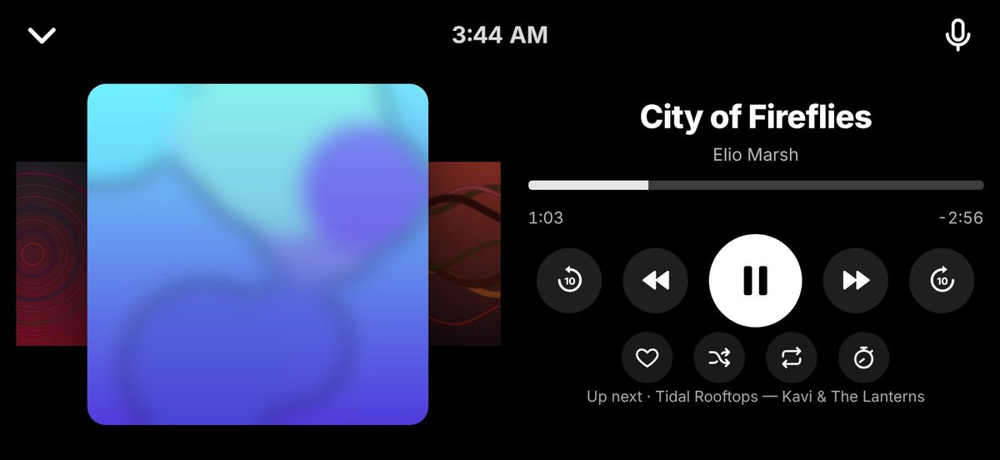
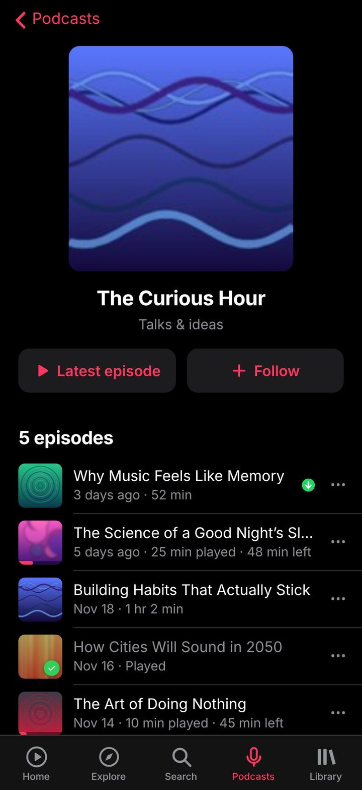
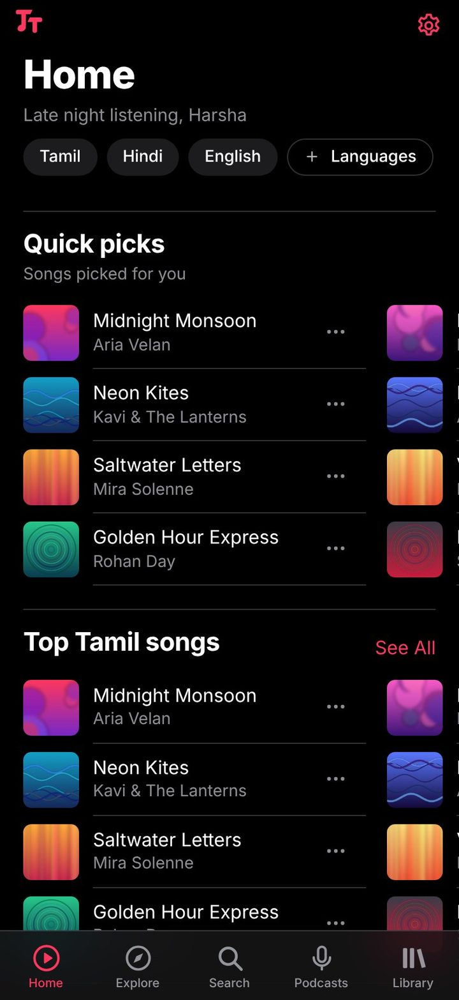
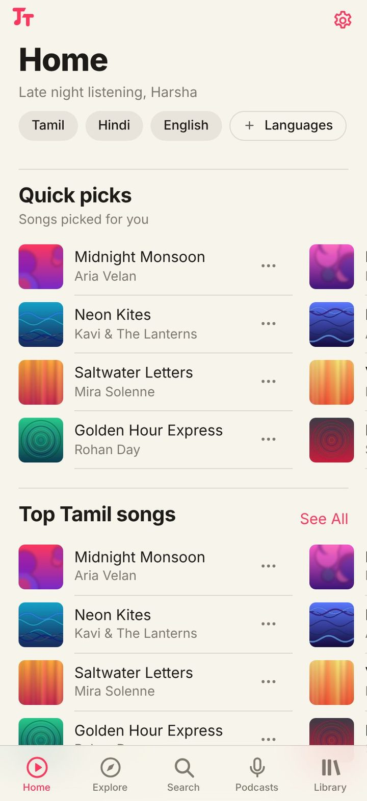

The music player that always finds the song.
Search anything and hear it as clean audio up to 320 kbps — with lyrics, podcasts, live radio, downloads and Car Mode. No subscription, no sign-up, no ads from us. If one source is busy, Tune Tune quietly tries the next.
Why another music player?
Free apps make you sit through ads and lock the good parts away. Paid apps want a card and a monthly fee. Tune Tune gives you the good parts — without either.
Free, with nothing to sign up for
No subscription, no trial that turns into a bill, no account, no card. Open it and play.
Clean audio, up to 320 kbps
Most songs play as ad-free audio in high quality. A small badge shows the exact quality, and Data saver uses less when you’re on mobile data.
It finds the song
Tune Tune doesn’t depend on one server. It checks dozens of free routes and plays from whichever answers first.
Songs, podcasts and radio in one place
Music in 40 languages, podcasts from around the world, and thousands of live radio stations — one search box.
The same app on every screen
Windows, macOS, Linux, Android, iPhone, iPad and the web. Same look, same features, wherever you listen.
Private and light
No tracking. Favorites, downloads, history and your listening stats stay on your device. The Android app is about 4.5 MB.
How every song finds its way to you
When you press play, Tune Tune walks down this list until something answers — usually in under a second. You never have to choose; it just plays.

Tap the quality badge in the player any time to see exactly where the song is coming from.
- 1
Already on your device
Songs you downloaded — and the ones Tune Tune saved automatically — start instantly, even with no internet.
- 2
JioSaavn, through free routes
Over 20 free relays and community servers are tried side by side; the fastest wins and is remembered for next time. Clean audio up to 320 kbps.
- 3
Matched from the charts
Chart hits and YouTube songs are matched to a clean JioSaavn copy whenever one exists, so you get the better audio.
- 4
YouTube Music audio, ad-free
Just the audio, through public mirrors that refresh themselves — or the built-in engine in the Windows, Mac, Linux and Android apps.
- 5
The YouTube player
The last resort, only for the rare song nothing above has. YouTube’s own ads can appear here — never ads from Tune Tune.
How it compares
An honest side-by-side. Paid apps are great — if you want to pay every month. Free apps cost you in ads and missing features.
Tune Tune | Typical free music apps | Paid subscriptions | |
|---|---|---|---|
| Price | Free | Free | Monthly fee |
| Account | Not needed | Sign-up required | Sign-up and payment card |
| Ads | None from us* | Audio and video ads | None |
| Sound quality | Up to 320 kbps, shown on every song | Often lower quality | High, some offer lossless |
| Play with the screen off | Yes | Often limited | Yes |
| Downloads for offline | Yes | Usually not | Yes |
| Pick any song, skip freely | Yes | Often limited on phones | Yes |
| Songs, podcasts and live radio together | Yes | Varies | Varies |
| Synced lyrics | Yes | Varies | Yes |
| 10-band equalizer | Yes, with presets | Rare | Basic or none |
| Car Mode and Party Mode | Yes | Rare | Varies |
| Windows, macOS, Linux, Android, iPhone and web | All six | Some | Most — Linux often missing |
| Your listening data | Stays on your device | Collected for ads | Collected by the service |
| Official licensed catalog and editors’ playlists | Plays from public sources | Yes | Yes |
* The YouTube player is used only when no clean source has a song, and YouTube may show its own ads there. Comparisons describe typical free and paid plans; every service is different and changes over time.
Made for listening, not for selling.
A player that feels like it’s yours.
Big album art that slides as you swipe, colors that follow the music, and lyrics that light up line by line.
- Synced lyrics — tap any line to jump there
- Long titles roll gently; tap to bring them back
- Queue, shuffle, repeat, crossfade and gap-free playback
- Lock-screen and headphone controls on every device
Always know where a song comes from.
Tap the quality badge to see the format, bitrate and source of what’s playing. Green means a free, clean source; red means the YouTube player.
- Quality badge on every song — HQ means 320 kbps
- Auto, Data saver, Normal and High quality
- Volume levelling keeps every song at a similar loudness

Shape the sound.
A 10-band equalizer with presets you can pin, plus bass, treble, stereo width and a loudness mode for the car or earbuds.
- Presets like Bass Boost, Vocal, Acoustic and Late Night
- Save your own sound and switch with one tap
- Works in the Windows, Mac, Linux and Android apps and the web

Car Mode: big, calm and safe.
Huge buttons you can hit without looking, the time at a glance, voice search, and what’s up next. Turn your phone sideways and it can switch to Car Mode on its own.
- Swipe the album art to change songs
- Long titles roll so nothing gets cut off
- Sleep timer and favorites one tap away

Podcasts that remember where you were.
Follow shows from around the world. Every episode shows how much you’ve heard and how much is left, with a progress bar on the artwork.
- Continue listening from the exact second
- Skip 15 seconds back or 30 forward, change speed
- Mark as played, read show notes, download episodes

Dark, or soft paper white.
Follows your device’s light or dark setting. The light theme is a warm paper white that’s easy on the eyes at any hour.
- Home fills with top songs and playlists in your languages
- Quick picks learn from what you play
- Text size and motion settings for comfort


Up and playing in a minute
- Get the appDownload it for your device below, or open it in your browser. On iPhone, add it to your Home Screen.
- Pick your languagesHome fills with top songs and playlists in the languages you choose. Change them any time.
- Search and playFind songs, albums, artists, podcasts or stations — type, or use voice search.
- Make it yoursTap ♥ for favorites, build playlists, and download songs for when you’re offline.
- Open the playerTap the mini player for lyrics, queue, equalizer, sleep timer, Car Mode and Party Mode.
Keyboard shortcuts on a computer
- Space
- Play or pause
- ←→
- Back or forward 10 seconds
- NP
- Next or previous song
- ↑↓
- Volume
- Y
- Lyrics
- Q
- Queue
- E
- Equalizer
- D
- Car Mode
- X
- Party Mode
- /
- Search
- ?
- All shortcuts
Get Tune Tune
Free for every device. Your favorites and downloads stay on the device you use.
Questions, answered
Is Tune Tune really free?
Yes. There’s no subscription, no trial and no account. Every feature on this page is included.
Are there ads?
Not from us. Most songs play as clean audio with no ads at all. The YouTube player is used only as a last resort for songs no clean source has, and YouTube may show its own ads there. Those songs show a red dot on the quality badge.
Why does a song sometimes take a moment to start?
Tune Tune is checking its list of sources and picking the fastest one that has the song. It remembers what worked, so the next song usually starts right away.
Does it work offline?
Yes, for songs you’ve downloaded and songs Tune Tune saved automatically. Open Library › Offline Mix to play them with no connection. Searching and new songs need the internet.
Does music keep playing when my screen is off?
Yes, with lock-screen and headphone controls, on every device. On iPhone, songs that play through the YouTube player pause when the screen locks — Apple doesn’t allow those to play in the background.
Do I need an account? Where is my data kept?
No account is needed. Your favorites, playlists, downloads, history and listening stats are stored only on your device. You can back them up and restore them from Settings.
How much data does it use?
High quality streams up to 320 kbps. On a slow or mobile connection, Auto lowers the quality so music never stops, and Data saver uses about 96 kbps.
Windows or macOS says the app is from an unknown developer. Is it safe?
That message appears for new apps without a paid signing certificate. On Windows choose More info → Run anyway. On macOS open System Settings → Privacy & Security and click Open Anyway. You only do this once.
Why is there no App Store download for iPhone?
Apple only allows App Store installs. Open Tune Tune in Safari, tap Share → Add to Home Screen, and it opens full-screen like any other app. The equalizer isn’t available on iPhone and iPad because of Apple’s limits on web apps.
How do I update?
The web app and iPhone version update themselves. For the Windows, Mac, Linux and Android apps, download the new version from this page and install it over the old one — your library stays.
Press play. It finds the rest.
Free, private and ready on every device you own.